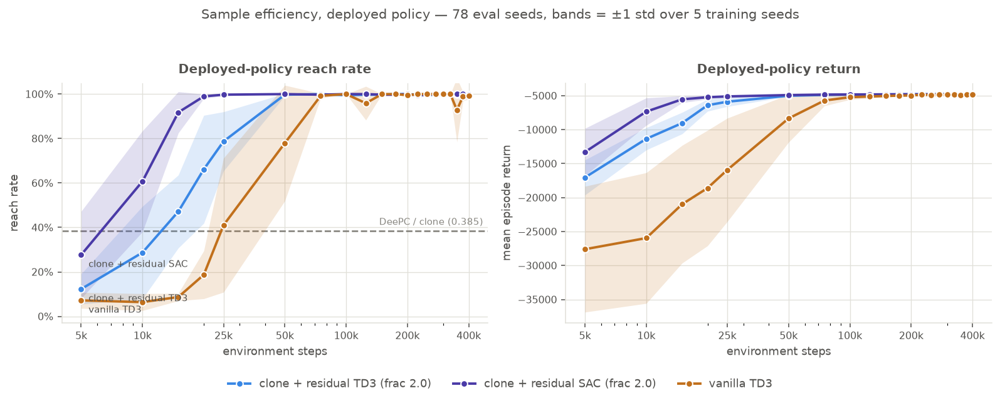
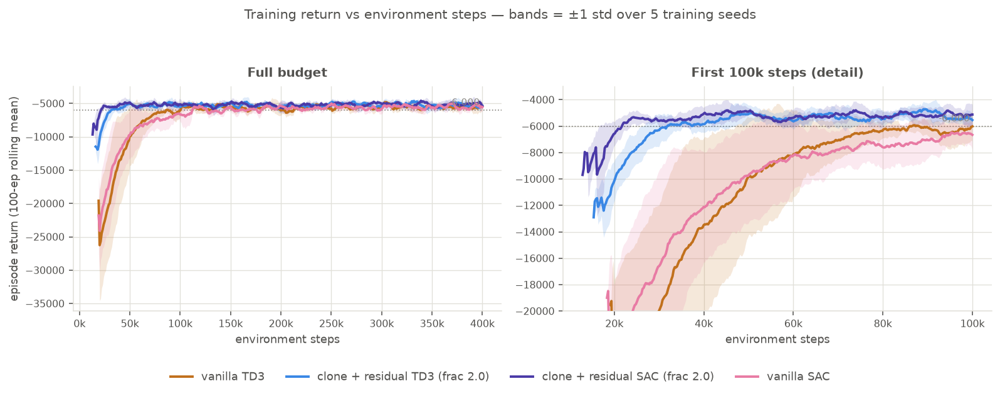

11. Sample efficiency on the deployed policy — the prior and the optimizer interact¶
Status: complete (2026-07-31)
09 claimed the MPC prior buys 2.3× fewer environment steps, measured on training return, and listed the cleaner version as an open item: reach rate at intermediate checkpoints. Measured that way the ratio is 1.33× and not significant (\(p = 0.22\)). But that is not the interesting result. Running the full 2×2 — prior or no prior, TD3 or SAC — shows the two factors are not additive. SAC on its own is worth nothing here (70k steps vs TD3's 60k, \(p = 0.55\), if anything slower). The prior on its own is worth 1.33× and does not clear significance. Together they are worth 4.1× (70k → 17k, \(p = 0.0079\)). All four arms land on the same asymptote. The honest headline is not "the prior helps" or "SAC helps" but "a stochastic-policy learner exploring around a decent base action learns fast, and neither half does it alone."
Motivation¶
The 09 headline is a behaviour-policy number. A training-return curve includes exploration noise and scores whatever start states training happened to sample; it also depends on an arbitrary threshold (−6000) whose choice moves the ratio. None of that is what you deploy. The deployed quantity is the greedy policy on the canonical 78-seed sweep, and it can be measured at any checkpoint — so measure it.
Two more questions came for free once checkpointing existed. Entry 08 picked TD3 for the residual by reasoning from properties, never by measurement, and SAC was already implemented as the fallback path. And once SAC turned out to be dramatically faster as a residual, the obvious confound had to be closed: is that SAC being a better optimizer, or SAC being a better optimizer for this composition? That needs the fourth cell.
Method¶
All four arms: 5 training seeds × 400k steps, snapshotting the policy every 25k
(--checkpoint-dir), then every snapshot evaluated greedy on the same 78 eval seeds every
other entry uses. Residual arms use residual_frac 2.0. Every arm uses lr 1e-3 — the repo's
CLI default and the value the published TD3 arms used. It is not SB3's SAC default of 3e-4;
parity across the cells of a 2×2 was worth more than each cell's own tuned default, for the
same reason 09 forced TD3 on its control arm.
Two checks before any of the numbers below mean anything:
- The retrain reproduces the published table exactly — at 400k, residual
78 78 77 78 78and vanilla78 78 78 78 75, the same per-seed counts entry 09 reports. Training is seed-deterministic on this machine, so the intermediate checkpoints sit on the same runs as the already-published endpoints rather than on a parallel universe. - The first grid censored the answer. SAC-residual was already ≥ 95 % at 25k, the earliest checkpoint, on all 5 seeds — so its crossing point was unmeasurable. The early window was re-trained at 5k resolution (25k steps is ~90 s per run) and those runs reproduce the coarse ones exactly at their shared 25k point.
The lesson generalizes: pick the checkpoint grid before claiming a crossing point. A 25k-spaced grid cannot measure a 17k crossing.
Reach rate vs training steps¶

The two residual curves sit far to the left; the two vanilla curves lie almost on top of each other. That picture is the result.
| env steps | residual SAC | residual TD3 | vanilla SAC | vanilla TD3 |
|---|---|---|---|---|
| 5k | 0.277 ± 0.196 | 0.123 ± 0.068 | 0.079 ± 0.052 | 0.072 ± 0.036 |
| 10k | 0.608 ± 0.227 | 0.287 ± 0.208 | 0.110 ± 0.074 | 0.064 ± 0.038 |
| 15k | 0.918 ± 0.093 | 0.472 ± 0.164 | 0.256 ± 0.223 | 0.087 ± 0.017 |
| 20k | 0.990 ± 0.010 | 0.662 ± 0.243 | 0.331 ± 0.287 | 0.187 ± 0.108 |
| 25k | 0.997 ± 0.005 | 0.787 ± 0.133 | 0.400 ± 0.355 | 0.410 ± 0.302 |
| 50k | 1.000 ± 0.000 | 0.997 ± 0.005 | 0.736 ± 0.341 | 0.779 ± 0.260 |
| 75k | 0.997 ± 0.005 | 1.000 ± 0.000 | 0.946 ± 0.090 | 0.992 ± 0.010 |
| 100k | 1.000 ± 0.000 | 0.995 ± 0.006 | 1.000 ± 0.000 | 1.000 ± 0.000 |
| 200k | 1.000 ± 0.000 | 1.000 ± 0.000 | 0.997 ± 0.005 | 0.995 ± 0.006 |
| 350k | 1.000 ± 0.000 | 0.997 ± 0.005 | 1.000 ± 0.000 | 0.928 ± 0.144 |
| 400k | 0.997 ± 0.005 | 0.997 ± 0.005 | 1.000 ± 0.000 | 0.992 ± 0.015 |
The 2×2 — steps to a deployable policy¶
Environment steps to the first checkpoint clearing reach ≥ 0.95, 5k resolution:
| with the DeePC prior (residual) | from scratch (vanilla) | prior's effect | |
|---|---|---|---|
| SAC | 17,000 ± 2,449 | 70,000 ± 18,708 | 4.1×, \(p = 0.0079\) |
| TD3 | 44,000 ± 12,000 | 60,000 ± 12,247 | 1.36×, \(p = 0.2222\) |
| optimizer's effect | 2.6×, \(p = 0.0159\) | 0.86× (SAC slower), \(p = 0.5476\) |
Exact two-sided Mann–Whitney on 5 vs 5, so \(p = 0.0079\) is the floor. Per-seed crossings:
SAC-residual 20 15 15 20 15 (k), TD3-residual 50 20 50 50 50, TD3-vanilla 75 75 50 50 50,
SAC-vanilla 100 75 50 75 50.
Read the table by its off-diagonal. Neither factor alone is significant: SAC without the prior is nominally worse than TD3, and the prior under TD3 does not separate. Only the combination moves — and it moves by 4×, with the tightest seed spread of any arm (±2.4k against ±12k–19k everywhere else).
Most of it is exploration breadth, not stochasticity¶
Measured at initialization on the residual's a_res ∈ [-1,1]², SAC explores 6.5× wider
than TD3: std 0.64 against 0.098, which with frac=2.0 is ±13.2 vs ±2.0 units/s on v. TD3's
σ = 0.1 was inherited from the vanilla arm and never re-tuned for the residual's action
space. Raising it to match SAC's measured breadth (--noise-sigma 0.6, 5 seeds, 5k grid):
| arm | steps to reach ≥ 0.95 |
|---|---|
| clone + residual SAC | 17,000 ± 2,449 |
clone + residual TD3, σ = 0.6 |
25,000 ± 3,162 |
clone + residual TD3, σ = 0.1 (the published arm) |
44,000 ± 12,000 |
Breadth alone recovers about two-thirds of the gap, and collapses the seed spread from ±12k to ±3.2k. So a large part of what looks like "SAC is a better optimizer here" is really "TD3's exploration noise was miscalibrated for exploiting a good base action" — when you start from a 38.5 %-reach controller you can afford bold probes, because you are never far from something sensible.
SAC still beats breadth-matched TD3, though: 17k vs 25k, \(p = 0.0159\). Three candidates for
that remainder, none separated here — SAC's entropy target adapts the breadth downward as the
critic sharpens (the fixed σ = 0.6 run is still at 0.987 at 50k where the σ = 0.1 baseline
has reached 0.997); the soft entropy-augmented value target differs from TD3's target-policy
smoothing; and policy_delay = 2 gives TD3 half as many actor updates per environment step,
which has nothing to do with entropy at all.
Read the σ comparison carefully
σ = 0.6 vs σ = 0.1 is a 1.76× effect at \(p = 0.15\). The baseline's per-seed
crossings are [50k, 20k, 50k, 50k, 50k] — one lucky seed and four ties leave a 5-vs-5
rank test almost no power. The direction is clear; the significance is not there at \(n=5\).
The training-return view agrees, and reproduces 09's two published numbers exactly:

| arm | steps to 100-ep rolling return > −6000 |
|---|---|
| clone + residual SAC (frac 2.0) | 20,340 ± 2,464 |
| clone + residual TD3 (frac 2.0) | 30,816 ± 5,214 |
| vanilla TD3 | 69,547 ± 24,348 |
| vanilla SAC | 82,229 ± 29,709 |
Why the return metric gave a bigger number for the prior
Reach rate saturates. Every arm is pinned at ~1.0 from 100k onward, so the metric stops discriminating early and compresses the ratio; return keeps separating long after. Neither is wrong — they answer different questions. Reach rate answers "when is it deployable", return answers "when is it good", and only the first has a natural threshold.
Mid-training instability is a TD3-without-prior problem¶
Reporting one final checkpoint hides this. Over every checkpoint from 100k on (5 seeds × 13 checkpoints = 65 evaluations per arm):
| arm | mean | worst single checkpoint | std |
|---|---|---|---|
| vanilla SAC | 0.9994 | 0.987 | 0.0027 |
| clone + residual SAC | 0.9988 | 0.974 | 0.0043 |
| clone + residual TD3 | 0.9974 | 0.987 | 0.0051 |
| vanilla TD3 | 0.9895 | 0.641 (seed 3 @ 350k) | 0.0501 |
Vanilla TD3 drops to 50/78 at 350k and 63/78 at 125k, then recovers; its published 0.992 is partly a lucky draw of where training stopped — those same five runs, evaluated at 350k instead, average 0.928. Every other arm stays inside 1.3 percentage points of solved for the entire back half of training.
An earlier version of this entry read that as "the prior buys a floor." The fourth arm falsifies it: vanilla SAC has no prior and the steadiest curve of all four. The unstable cell is specifically TD3-from-scratch, so the fix is either the prior or the stochastic policy — and the honest statement is that we do not know which mechanism is doing the stabilizing.
The counter-reading still applies: nobody deploys a random checkpoint. If your protocol is "train 400k, ship the last one," vanilla TD3 is fine here. The instability matters when the budget is uncertain or early stopping is on the table.
Final performance — every method, same 78 seeds¶
RL arms are 5 training seeds × 78 eval seeds = 390 episodes; the classical arms are deterministic, so they get one 78-episode pass.
| method | reach per training seed | success rate | Wilson 95% |
|---|---|---|---|
| DeePC (QP) | deterministic | 30/78 = 0.385 | 0.284–0.496 |
clone f_θ |
deterministic | 30/78 = 0.385 | 0.284–0.496 |
clone + residual TD3, frac=1.0 |
74 73 70 76 69 | 362/390 = 0.928 | 0.898–0.950 |
clone + residual TD3, frac=2.0 |
78 78 77 78 78 | 389/390 = 0.997 | 0.986–1.000 |
clone + residual SAC, frac=2.0 |
78 78 78 77 78 | 389/390 = 0.997 | 0.986–1.000 |
| vanilla TD3 | 78 78 78 78 75 | 387/390 = 0.992 | 0.978–0.997 |
| vanilla SAC | 78 78 78 78 78 | 390/390 = 1.000 | 0.990–1.000 |
The clone and the frac=1.0 arm were re-measured for this entry and reproduce their published
counts exactly. DeePC's 30/78 is carried over from 09 — it is deterministic
and a re-run is ~1 h of QP solves.
No pair among the four RL arms is separable on reach. McNemar on the 390 paired episodes, worst case 3 discordant pairs out of 390:
| pair | discordant | \(p\) |
|---|---|---|
| residual TD3 vs residual SAC | 1 / 1 | 1.0000 |
| residual TD3 vs vanilla SAC | 0 / 1 | 1.0000 |
| residual SAC vs vanilla SAC | 0 / 1 | 1.0000 |
| vanilla TD3 vs vanilla SAC | 0 / 3 | 0.2482 |
| residual TD3 vs vanilla TD3 | 3 / 1 | 0.6171 |
| residual SAC vs vanilla TD3 | 3 / 1 | 0.6171 |
Return and per-step cost still separate them. Costs are per-episode means divided by mean episode length, because episode lengths differ across arms and per-episode sums hide it:
| arm | return (mean ± std over seeds) | steps | head/step | ctrl/step | traj dev vs clone |
|---|---|---|---|---|---|
| clone + residual SAC | −4773.2 ± 15.3 | 73.0 | 6.37 | 0.134 | 3.92 |
| clone + residual TD3 | −4778.3 ± 7.9 | 72.6 | 6.42 | 0.144 | 3.77 |
| vanilla TD3 | −4854.7 ± 76.0 | 76.5 | 6.64 | 0.126 | 4.10 |
| vanilla SAC | −5020.6 ± 43.9 | 66.1 | 6.90 | 0.115 | 3.58 |
Mann–Whitney on the per-seed returns: both residuals beat both vanilla arms at \(p = 0.0079\) (complete rank separation, all four pairings). SAC vs TD3 within the residual is indistinguishable (\(p = 0.6905\)); within vanilla, SAC is nominally worse (\(p = 0.0556\)).
Vanilla SAC is the sharpest illustration of conclusion 4 in 09. It is the only arm to reach on all 390 episodes and simultaneously the worst arm on return. It gets there by driving hardest — 66 steps, the fewest of any arm, and the lowest control cost per step — and pays for it with the highest heading cost per step (6.90) of anything measured. A reach-rate leaderboard would rank it first; the cost it is actually optimizing ranks it last.
Watching it learn¶
Side-by-side dashboards at each checkpoint, same two showcase seeds. Seed 4104626050 is the clean illustration: the residual solves it early, vanilla drives into the workspace wall and truncates until 100k.
| SAC residual vs vanilla TD3 — 15k steps, seed 4104626050 |
|---|
| TD3 residual vs vanilla TD3 — 25k steps, seed 4104626050 |
| TD3 residual vs vanilla TD3 — 100k steps, seed 4104626050 (both converged) |
At 15k the SAC residual reaches in 35 steps while vanilla is still circling at step 200. By 100k both reach and the two trajectories are nearly the same curve — 42 steps vs 33 — which is the asymptote result in visual form.
The full set is docs/journey/videos/ckpt-{025,050,100,200,400}k-<seed>.mp4 (TD3 residual vs
vanilla) and ckpt-sac-{015,025,050,100,200,400}k-<seed>.mp4 (SAC residual vs vanilla), for
seeds 4104626034 and 4104626050. The vanilla-SAC arm has no videos yet.
Conclusions¶
- The prior and the optimizer interact; neither is worth much alone. 4.1× together (\(p = 0.0079\)), 1.36× for the prior under TD3 (\(p = 0.22\)), 0.86× for SAC without the prior (\(p = 0.55\)). Any claim of the form "RL+MPC saves X% of samples" that does not name the optimizer is under-specified — on this task the same prior is worth either nothing or 4× depending on what is learning on top of it.
- Use SAC for the residual, and don't bother switching the from-scratch baseline. SAC as a
residual is 2.6× faster than TD3 with a 5× tighter spread, at no cost to the asymptote, and
TD3's zero-init argument from 08 survives the switch — SAC's mean head
zeroes the same way and its deterministic evaluation returns
tanh(0) = 0, so no-regression-at-init is intact. SAC as a from-scratch learner is slightly worse than TD3. - The prior does not raise the ceiling, and it is not what buys stability either. All four arms are statistically indistinguishable on reach at 400k. Mid-training instability turned out to be specific to TD3-from-scratch, not to "no prior" — vanilla SAC is the steadiest arm of the four. What the prior reliably buys is a better return (both residuals beat both vanillas, \(p = 0.0079\) each) and, with the right optimizer, speed.
- Reach rate is the wrong leaderboard. Vanilla SAC reaches 390/390 — the only perfect arm — while having the worst return and the worst heading cost per step of anything measured. Six arms sit inside 3 discordant episodes of each other on reach and are cleanly ordered on return. Report the cost split.
- Grid resolution is a measurement decision, not a detail. The first sweep reported SAC's crossing as "≤ 25k" because 25k was the first checkpoint. The real answer, 17k, needed a grid five times finer.
- Don't over-generalize from one hyperparameter point. Every arm ran at
lr = 1e-3for parity. This is one slice through a 2×2 × learning-rate space on a task (09, conclusion 5) chosen to be unfavourable to RL+MPC.
Open / not yet reported¶
- What is left after breadth. The
σ = 0.6run attributes ~2/3 of SAC's edge to exploration magnitude, but the remaining 25k → 17k is unexplained. Three separable causes, each one run: SAC withent_coeffixed rather than auto-tuned (isolates adaptivity), TD3 withpolicy_delay=1(isolates actor-update frequency), and anσsweep to check 0.6 is near the optimum rather than merely better than 0.1. - A σ sweep on the vanilla arm. If the interaction is really about exploration breadth paying off only when anchored, then widening vanilla TD3's noise should not help — and that is the cleaner version of the 2×2 above.
- Each cell at its own tuned
lr. 1e-3 was chosen for parity, not because it suits SAC. 3e-4 might change the SAC column in either direction — and if it rescues vanilla SAC, the interaction in conclusion 1 weakens. - PPO anywhere. Still the untested third optimizer, and the POMDP result in 09 gives it a principled shot on the vanilla arm.
- Why vanilla TD3 degrades mid-training. The 350k collapse on seed 3 is diagnosed only as "it happens". Critic divergence, policy-noise interaction, and replay staleness are all unexamined — and the fact that vanilla SAC does not do it is the best available clue.
- Robustness to plant perturbation remains the open item 09 lists.
Reproduce¶
# the 2x2: {residual, vanilla} x {td3, sac}, 5 seeds each, checkpoints every 25k
uv run python scripts/train_residual.py --residual-frac 2.0 --timesteps 400000 --seed 0 \
--out data/ckptsweep/res_s0.zip --checkpoint-dir data/ckptsweep/res_s0 --checkpoint-freq 25000
uv run python scripts/train_residual.py --algo sac --residual-frac 2.0 --timesteps 400000 --seed 0 \
--out data/sacsweep/res_s0.zip --checkpoint-dir data/sacsweep/res_s0 --checkpoint-freq 25000 \
--monitor-out data/sacsweep/res_s0_mon
uv run python scripts/train_vanilla.py --timesteps 400000 --seed 0 \
--out data/ckptsweep/van_s0.zip --checkpoint-dir data/ckptsweep/van_s0 --checkpoint-freq 25000
uv run python scripts/train_vanilla.py --algo sac --timesteps 400000 --seed 0 \
--out data/sacsweep_van/van_s0.zip --checkpoint-dir data/sacsweep_van/van_s0 \
--checkpoint-freq 25000 --monitor-out data/sacsweep_van/van_s0_mon
# the 5k-resolution early window (25k budget, same seeds) -- needed for SAC's crossing point
uv run python scripts/train_residual.py --algo sac --residual-frac 2.0 --timesteps 25000 --seed 0 \
--out data/earlysweep_sac/res_s0.zip --checkpoint-dir data/earlysweep_sac/res_s0 --checkpoint-freq 5000
# greedy evaluation of every checkpoint on the canonical 78 eval seeds, one call per arm
uv run python scripts/sweep_checkpoints.py --ckpt-root data/ckptsweep --out data/checkpoint_sweep.csv
uv run python scripts/sweep_checkpoints.py --ckpt-root data/sacsweep --arms residual \
--algo sac --label residual_sac --out data/checkpoint_sweep_sac.csv
uv run python scripts/sweep_checkpoints.py --ckpt-root data/sacsweep_van --arms vanilla \
--algo sac --label vanilla_sac --out data/checkpoint_sweep_sacvan.csv
# figures (the plot script merges comma-separated CSVs)
uv run python scripts/plot_checkpoint_sweep.py --csv data/checkpoint_sweep_all.csv
uv run python scripts/plot_learning_curves.py \
--glob-sac 'data/sacsweep/res_s*_mon.monitor.csv' \
--glob-sac-van 'data/sacsweep_van/van_s*_mon.monitor.csv' \
--out docs/journey/figures/learning_curves_3arm.png
# checkpoint videos (--algo and --vanilla-algo are independent, so the columns can differ)
uv run python scripts/render_dashboard_video.py --seeds 4104626050 --compare residual-vanilla \
--residual-frac 2.0 --algo sac --vanilla-algo td3 \
--residual-model data/earlysweep_sac/res_s0/ckpt_15000_steps.zip \
--vanilla-model data/earlysweep/van_s0/ckpt_15000_steps.zip \
--figdir data/ckptvideo_sac/15000 --video-prefix ckpt-sac-015k \
--title-note " — SAC residual, 15k training steps"